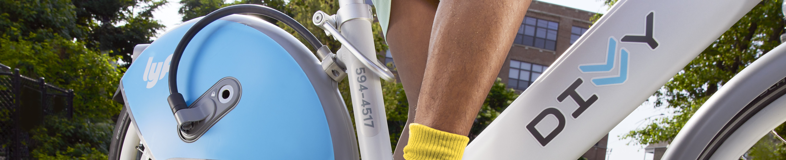

As part of the Google Data Analytics Certification, I have completed a case study on Divvy* bike-share data. The dataset used in
this case study can be found here, and the scenario is as follows: A bike-share company is hoping gain more "member" riders
(people who have purchased an annual membership) by converting "casual" riders (people who use the bike-share service, but are not members)
into members. My task is to use this data to determine any meaningful differences between how casual and member riders use the bike-share service,
and to report my findings along with my top three recommendations on how a marketing team may better target casual riders.
(*The scenario in this case study is built around a fictional bike-share company "Cyclistic", but the data is coming from a real bike-share
company called "Divvy". In this report I will refer to the real company "Divvy" rather than the fictional company "Cyclistic" since I reference Divvy media
in my documentation, and I think it would be confusing to have two different company names floating around.)
Casual riders are more likely to: use the bike-share service on the weekend, end their trips at attractions such as parks and museums, and
use electric bikes over classic bikes. Find more details on the work behind this project below, and feel free to explore the Tableau dashboard
here to explore the data even further.
Determine how casual and member riders use Divvy bikes differently, and provide a clear report of the results of this analysis to the marketing team.
Divvy's bike-share data can be found here. We will use the previous 12 months
of data (as specified in the case study) for our analysis--"202111-divvy-tripdata.zip" to "202210-divvy-tripdata.zip". Each file corresponds to
a particular month, and all contain the following information:
ride_id: a unique identifier for each ride
rideable_type: the type of bike used
started_at: time at which the ride started
ended_at: time at which the ride ended
start_station_name: name of the Divvy parking station the bike was picked up from
start_station_id: ID of the corresponding start station
end_station_name: name of the Divvy parking station the bike was dropped off at
end_station_id: ID of the corresponding end station
start_lat: lattitude of the starting location
start_lng: longitude of the starting location
end_lat: lattitude of the ending location
end_lng: longitude of the ending location
member_casual: type of rider (casual or member)
Documentation of Cleaning/Manipulation of Data
The data was cleaned/manipulated using Python, and the process is documented in a Jupyter Notebook--available on my GitHub.
Quick summary of significant steps taken in this process:
Divvy has two types of bikes available to use--classic bikes or electric bikes. In the data, a third option "docked_bike" is listed.
Based on exploring Divvy data from other months (outside the 12 month scope), the timing of the introduction of electric bikes to their
fleet, and other patterns in the data, I decided that "docked_bike" is the same as a classic bike and replaced these values accordingly.
(Normally this would be a quick question I could ask the stakeholders to clarify, but for the purposes of this case study I am statisfied with
the evidence I reference in the documentation.)
Any classic bike data points that do not have a recorded end station were removed from the dataset. Classic bikes must be parked at Divvy stations
(unlike electric bikes, which can be parked anywhere), so if this information is missing then this implies there is either something wrong with the data,
or an unusual event occured (e.g. a bike was lost). This subset of data only accounted to 0.1% of the entire dataset, and since they are not indicitave
of a typical trip, I decided to remove them from the dataset.
"False starts"--defined by having a trip duration of less than 2 minutes and the same start/end location--were removed from the dataset. False starts accounted
for 2.5% of the total dataset. Since they are not indicative of a typical trip, I decided to remove them from the dataset.
Casual riders tend to take trips on weekends, as opposed to member riders who typically use the service on weekdays. This could be due to
casual riders using the service for fun weekend trips (supported by findings I will detail next), whereas member riders may be using the service for
more consistent needs like commuting to work.
The most popular end stations used for casual riders tend to be in locations near parks, beaches, and museums. The most popular end stations for member riders
tend to be more inland, perhaps near common areas of work (e.g. Clinton St & Washington Blvd near Accenture Tower, or University Ave & 57th St located within
the University of Chicago).
Casual riders use electric bikes slightly more frequently than classic bikes, whereas member riders use classic bikes slightly more frequently
than electric bikes. While electric bikes in and of themselves have desirable attributes (less tiring to ride, more modern, etc.), casual riders may
prefer electric bikes due to their convenience--they can be parked anywhere so it may be easier for a casual rider to pick up an electric bike
from wherever they happen to be. Member riders with more consistent use of the bike-share service may have specific Divvy stations where they pick-up and drop-off bikes
as part of their routine, and therefore finding a classic bike to use may be just as easy as finding an electric bike. Also, the use of classic bikes are free for members,
whereas the use of electric bikes include an additional charge.
Casual riders tend to use the bikes for longer periods of time than member riders, but not by a large amount (typically just a couple minutes more).
All riders tend to use the bike-share service in warmer months as opposed to colder months--members are slightly more likely to use the service in cold months.
Supporting Visualizations
See the Tableau dashboard above.
Top Three Recommendations
(the case study mentions the marketing team uses "email, social media, and other channels" to promote the bike-share program)
Connect with casual riders via email. Include information/promote fun attractions that are easy to get to via Divvy bikes, and
emphasize that the Annual Membership would pay for itself after two weekend trips if they usually use the Single Ride service,
or even after just one trip if they usually use the Day Pass.
If the marketing team is able to set up advertisements (promoting the membership program) on location at Divvy stations, they may focus
these ads on the more popular end stations for casual riders.
When posting on social media to promote the electic bike fleet, include information on discounts for members.
Additional data that could expand findings: The data provided to the public is, of course, anonymized. However, if rider identifiers are
available in the data within the company, then this would provide invaluable insight. For example, one could determine what the average amount
of savings would be for casual riders that end up spending more than members.